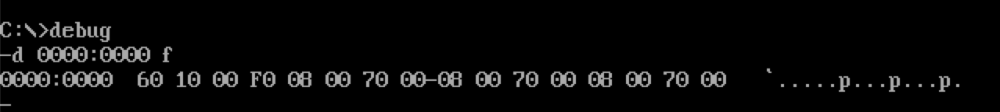

第四部分:中断I
Abstract
在之前的实验中，我们所编写的汇编程序从编译到运行出结果都很顺利。这个过程映射到CPU层面就是
CS:IP的跳转唯一取决于汇编程序员的代码。CSAPP将这个过程称为程序控制流。而中断则是将这种流程打断，建立更复杂的异常控制流。中断分为内中断和外中断两种。
内中断
中断产生
8086CPU使用中断类型码来标识中断信息的来源。中断类型码为一个字节型数据，可以表示256种中断信息的来源————具体指的是产生中断信息的事件，简称中断源。下面是8086中4种常见的中断源及其中断类型码:
* 除法错误: 0 * 单步执行: 1 * 执行into指令: 4 * 执行int n指令: n
中断过程
CPU获得中断类型码之后，需要跳转到该中断类型码对应的中断处理程序中进行处理。如何跳转呢？使用中断向量表。而跳转通常意味着改变CPU的状态，所以需要使用栈来保存现场。所以识别，保存和跳转就是中断过程主要干的事儿————其中识别由硬件完成！
中断向量表保存在内存0000:0000到0000:03FF的这1KB单元里。一个表项存放一个中断向量————也就是中断处理程序的地址入口。占4个字节，高地址放段地址，低地址放偏移地址。 ##### 识别 下图是一张8086的内存分布图:
从内存0开始，所以存储
N号中断源对应的中断向量的偏移地址的内存地址为:0000:4N，存储N号中断源对应的中断向量的段地址的内存地址为:0000：4N+2。看下图: 
跳转和保存
- 获得中断类型码
- 标志寄存器的值入栈:
pushf - 设置标志寄存器第8位TF和第9位IF的值位0: TF=0,IF=0
- CS的内容入栈:
push CS - IP的内容入栈:
push IP - 通过中断类型码获取入口地址:
(IP)=(N*4),(CS)=(N*4+2) - 最后一步执行结束后，CPU开始执行由程序员编写的中断处理程序
中断处理
所谓中断处理程序就是操作系统对各种中断的反应。 由于CPU随时可能检测到中断，所以中断处理程序必须一直存储在内存某段空间中。下面的实验就是通过来实现内中断处理程序。 ##### 0号中断 即除法溢出错误。
1 | mov ax, 1000h |
该除法指令在执行的过程中会发生溢出错误，导致产生0号中断从而引发中断过程。
实验 编写0号中断的处理程序
- 中断类型码:0
- 中断处理程序: 选择
0000：0200到0000：02ff这256个Bytes内存的区域来存放 - 中断向量表: 0号中断的段地址
0000:0002偏移地址0000:0000##### 安装处理程序do0> 得确保中断处理程序不会变动，所以选择一块合适的内存区域将其安装进去。
1 | assume cs:code |
设置中断向量号
当中断发生的时候，确保0号中断的处理程序跳转地址是上一个设置好的地址。
1 | mov ax,0 |
验证
注意，在跳转到中断处理程序之前，所有的CPU现场已经入栈保存好了，而跳转过程本身也是硬件过程，所以我们所做的仅仅只是设置好跳转的地址和该地址相应的处理代码。
经过实验发现DOSBox的和传统的DOS还是有一些区别的，这里用一个小实验验证中断:首先我们直接在debug下面将0号中断向量号改写成为0000:0200处，然后在另一块内存0200:0000中写进了会引发0号中断的代码:
然后修改好了CS:IP地址并开始执行:
###### 现象 单步执行,可以看到CS:IP的值在执行到div bh的时候，立马从0200:0005变成了0000:0002!,我写的中断处理mov cx,ffff也被执行！然后一直执行到结束退出。 实验的整个过程实际上就是做了一个跳转，然后我们仔细对比一下跳转前后寄存器值的差距:会发现除了CS:IP有变化之外，SS:SP大小也有变化，这是CPU保存现场的缘故————从00F7到00FD共3个字对应CS，IP和TF；而且状态寄存器EI也变为DI,估计也和TF和IF相关;因为我们的中断处理直接退出程序所以栈中的数据没有派上用场，不过如果需要返回源程序做一些操作的时候栈就会起到恢复的作用。我还尝试过在中断产生的时候查看栈中的内容，但是每次指令刚执行就被强制退出……不知道为什么。不过这是下一个实验的内容了。另外，这里可以回过头看一下ch2中关于栈的那个猜测，基本上没有毛病。
1号中断
在CPU保存现场的时候，对状态寄存器压栈，并且将其中两个状态位设置为零:TF=0;IF=0;主要是因为当CPU每执行完一条指令的时候，就会去查看状态寄存器的TF位是否为1，如果是则引发1号中断————单步中断。整个中断的过程和其他的没有什么区别，作者提到
debug -t的单步执行功能，实际上就是通过debug调用1号中断对CPU进行控制。这里的控制主要体现在中断处理程序上————比如debug -t就是设置寄存器的值显示在屏幕上。那为什么要在处理之前又将TF设置为零呢？注意前面的每执行完一条指令的意思，CPU在执行中断处理程序的时候是不能响应其他中断的，TF=0是防止在过程中递归的陷入。
但是在有些特殊情况下中断的产生，CPU不见得马上处理。比如
mov ss, ax和MOV sp, 10这两条设置堆栈的指令，在前面的实验中出现过。
int 指令
中断例程
int n是一种很重要的内中断。n是中断类型码，该条指令功能就是可以引发中断过程。执行如下: * 取终端类型码n * 标志寄存器入栈，IF=0,TF=0 *push cs,push ip* (IP)=(n4),(CS)=(n4+2) 注意一下这里的压栈顺序，后面的实验中会有用到。
一般情况下，系统会将一些具有一定功能的子程序，以中断处理程序的方式提供给应用程序调用，通常就是使用int指令。将这些自己编写的中断处理程序叫做中断例程。
编写loop中断例程
在屏幕中间显示80个“！”。 这个程序一看就知道需要使用到
loop指令，但是该指令到底是如何实现的呢？我们知道跳转指令实际上就是改变CS:IP的值，而给定次数的跳转和给定目标的跳转合在一起就会比较麻烦。
跳转指令是靠两个标号之间的相对位移而不是靠标号的地址这一点很重要。我们用cx存放循环次数，用bx存放相对位移。先看一下例程代码:
1 | assume cs:code |
至此，应该已经完全可以看懂这些汇编程序。可是核心的功能呢？如下:
跳转到标号s处需要知道s的段地址和偏移地址。先来分析一下在执行int 7ch之后发生了什么？画得不好凑活着看吧:)
x86中的栈是一个满堆栈。首先标志寄存器入栈，然后对se标号的CS:IP压栈。因为代码只有一个段，所以se的段地址和s的段地址一样。而bx中存储了s-se，所以对于s来说:bx+se就是它自己的偏移量。而se的偏移量就是栈中的IP。所以思路顺下来了。可以写代码了。
1 | lp: push bp |
上述代码中
add [bp+2],bx就是前面刚顺下来的算法实现。将栈中的IP修改称为s的偏移地址。这里的重点是iret指令，这个指令和跳转指令经常组合在一起共同使用，相当于pop ip,pop cs,popf这三条指令的和。上述代码就是在栈中修改好CS:IP的值，然后使用iret出栈执行。
结果
本次实验的过程实际上就是分为两部分:
安装例程和执行例程。 ###### 安装例程 对于7ch中断类型码来说，对应的中断例程地址应该在0000:01f0。我们首先将中断例程写进该地址，然后修改中断向量表项。
1 | assume cs:code |
我们将上述代码保存为
sample.asm然后编译连接。然后执行sample.exe:
上图分别是地址0000:0200处的中断例程，和0000:01f0处的中断向量表。可以看到成功写入内存。
执行例程
执行程序就是调用
int 7ch这个例程看是否有效。我们将执行程序保存为demo.asm编译连接。
1 | assume cs:code |
然后执行
demo.exe,看现象:
总结
这是最简单的一个例程，不过我们可以因此得知跳转指令和栈的重要性!
BIOS和DOS所提供的中断例程
关于BIOS和DOS已经很熟悉了，从计算机加电开始，
CS:IP会自动跳转到ffff:0000的地址执行程序，到底执行的是啥？有两大部分:自检程序和初始化程序。初始化程序将建立BIOS所支持的中断向量。BIOS中的中断例程主要有:
* 外部中断和内部中断的中断例程 * 用于对硬件设备进行I/O操作的中断例程 * 其他和硬件系统相关的中断例程
自检和初始化完成之后，调用
int 19h进行操作系统的引导。而DOS也有自己的中断例程，这些中断例程是操作系统提供给程序员的资源。另外，DOS和硬件设备相关的中断例程一般都是调用了BIOS的中断例程。每一个中断例程都是由很多的子程序构成的。不管是BIOS还是DOS的中断例程都通过ah来传递内部子程序的编号。 ##### BIOS中断例程 int 10h用来设置和字符和光标。见代码:
看现象:
下面是代码:
1 | assume cs:code |
DOS中断例程
DOS中断int 21h，之前一直使用4ch00参数即程序返回功能。
参数ah=9表示调用第21h号中断例程的9号子程序:在光标位置上显示字符串.看现象:
下面是代码:
1 | assume cs:code |